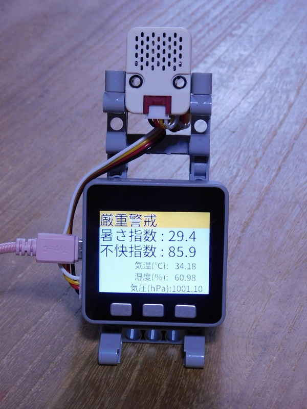

システム構成図
WBGT 計測ユニット
M5Stack と I2C接続のI2Cユニットを組み合わせ、温湿度、気圧変化を測定し、暑さ指数と不快指数を 表示するシステムである。1分毎に表示を更新し、計測データは、シリアル通信でUSBケーブルを通じて、ホストに送出される。
システム構成図

WBGT 計測ユニット
M5Stackに、温湿度センサーユニットをI2Cケーブルで接続しただけのシンプルな構成である。
tinygoを使用して開発した。 液晶と温湿度センサーユニットを初期化後、1分毎に、液晶の表示を更新し、測定結果を シリアル通信でUSBケーブルを通じて送出するだけのシンプルな構成である。
シリアルに出力するデータは、以下の順番で’,’区切りのテキストとして送出される。
温度,湿度,気圧,暑さ指数,不快指数以下のコマンドを実行すれば、コンパイル後、出来上がったプログラムは、直接、M5Stackに書き込まれる。
tinygo flash -target=m5stack -size=short -monitor .もし、上手く書き込めない場合は、以下のコマンドを実行し、uf2ファイルを生成する。
その後、出来上がったWBGT_watcher.uf2を手作業で、M5Stackに書き込めば良い。
tinygo build -o WBGT_watcher.uf2 -target=m5stack -size=short .flashで書き込みができた場合は、自動的にコンソールがモニターモードに切り替わる。
そして、しばらくすると、以下のように、1分毎に1行づつ測定データが表示される。
終了するには、Ctrl+Cを押す。
2025-08-08,08:30:15,27.14,67.06,989.02,23.84,76.72
2025-08-08,08:31:15,27.10,67.26,989.02,23.82,76.67
2025-08-08,08:32:16,27.11,67.35,989.02,23.84,76.71
2025-08-08,08:33:16,27.15,67.33,989.02,23.88,76.76
2025-08-08,08:34:16,27.19,67.32,988.99,23.92,76.82
2025-08-08,08:35:15,27.20,67.18,989.02,23.91,76.81
2025-08-08,08:36:15,27.23,67.05,989.04,23.92,76.84
2025-08-08,08:37:15,27.23,66.85,989.05,23.90,76.81
2025-08-08,08:38:16,27.21,66.76,989.08,23.87,76.77
2025-08-08,08:39:16,27.20,66.75,989.07,23.86,76.77
2025-08-08,08:40:16,27.19,66.74,989.09,23.85,76.74
2025-08-08,08:41:15,27.16,66.61,989.08,23.81,76.69
2025-08-08,08:42:15,27.16,66.51,989.09,23.80,76.67
2025-08-08,08:43:15,27.16,66.43,989.08,23.79,76.67
2025-08-08,08:44:16,27.16,66.43,989.09,23.79,76.66
2025-08-08,08:45:16,27.14,66.33,989.08,23.76,76.62
2025-08-08,08:46:15,27.15,66.16,989.12,23.75,76.62
2025-08-08,08:47:15,27.17,66.11,989.13,23.77,76.64
2025-08-08,08:48:15,27.18,65.99,989.17,23.76,76.64
2025-08-08,08:49:16,27.19,65.85,989.20,23.76,76.63
2025-08-08,08:50:16,27.17,65.74,989.22,23.73,76.60build でuf2ファイルを生成し、手作業でM5Stackに書き込んだ場合は、以下のコマンドを実行し、 コンソールをモニターモードに切り替える。
tinygo monitorしばらくすると、1分毎に、1行づつ測定データが表示される。
終了するには、Ctrl+Cを押す。
開発当初は、英数字のみで液晶に表示を行っていたが、日本語を含む文字列が加わると、表示ができなくなった。
現状では、tinygoは、内部に、英数字のフォントデータしか持っていないので、多バイト文字のフォントを表示することはできない。
また、組込みの場合、巨大なフォントデータを埋め込んでおいても、そのごく一部しか使用されることがないので、不合理である。
現状では、フォントファイルから、使用するフォントだけの情報を抜き出し、それを埋め込むことで、多バイト文字を表示している。
日本語の表記を変更する場合は、tinygo本家に書かれている以下の多バイト文字の表示手順のサンプルを参考にすること。
液晶に”危険”と表示しようとしたが、“険”が正常に表示できなかった。
いろいろと試行錯誤した結果、旧字体の”險”であれば、表示できることがわかった。
新字体が表示できて、旧字体が表示できないのはありそうなことだが、その逆というのは、不思議なことだ。
原因は不明であるが、当面は、“危險”という表記にしておく。
他にも、表示できない文字があるのかもしれない。特に、旧字体が存在する文字コードは、鬼門なのかもしれない。
最初は、main.goのソースコードを直接参照してフォントデータを抽出していたが、データエリアが足りないというエラーがでて、コンパイルできなくなった。 これは、main.goに含まれる文字列定義がすべて抽出されたため、埋め込まれるフォントデータのサイズが大きくなりすぎて、コンパイルできなくなったようだ。
最初は、以下のように、オリジナルのソースコードから、直接、24ptと40ptのフォントデータを生成していたので、データサイズが大きくなった。
main.go --> font24.go
main.go --> font40.goそこで、24ptと40ptのフォントを使う文字列をそれぞれ別ファイルで定義し、それをmain.goから参照するコードに書き換えた。 そして、別ファイルになった文字列の定義ファイルから、それぞれのフォントデータを生成する方法に切り替えた。 こうすることで、必要最低限の文字コードのデータしか抽出されないので、フォントデータが小さくなり、コンパイルできるようになった。
main.go
jp-40pt_string.go --> jp_font40.go
jp-24pt_string.go --> jp_font24.go